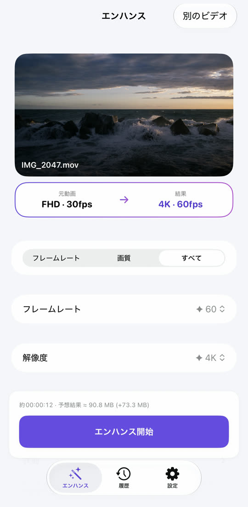
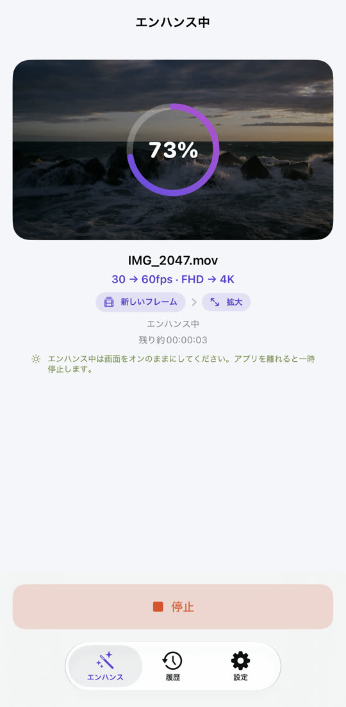
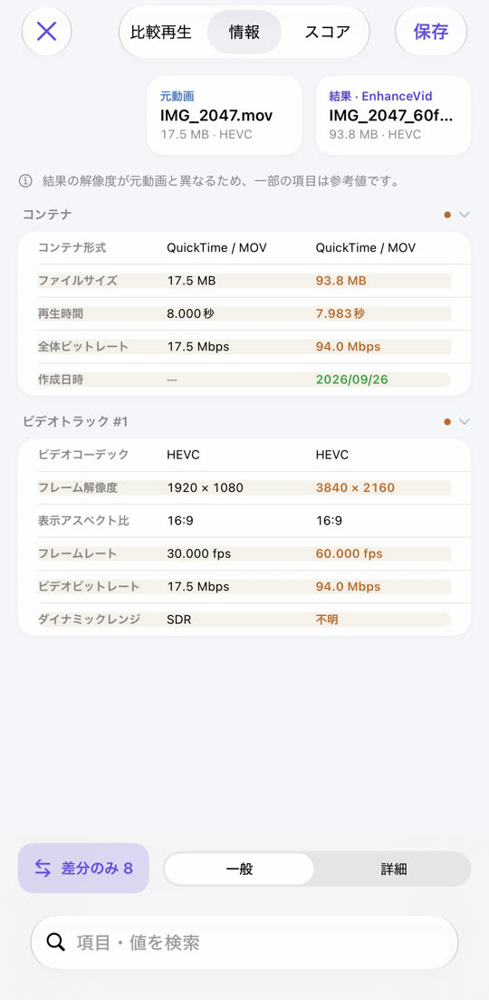
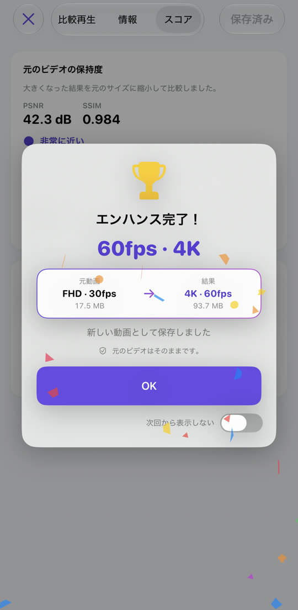

EnhanceVid
カクつく動画はなめらかに、
ぼやけた動画はくっきりと。
30fpsを60fpsに、フルHDを4Kに。フレームの間に新しいフレームを作って挟み、解像度を上げてくっきりと。処理はすべてiPhoneの中で行い、元動画はそのままに新しい動画として保存します。
App Storeからダウンロード無料 · iOS 26以降 · iPhone · iPad · Apple シリコン搭載 Mac

ぼやけを抑えて、くっきりと。
Apple MetalFX のアップスケールで解像度を上げます。中央の線を左右に動かして比べてみてください。

 元動画エンハンス
元動画エンハンス
⇆
サンプル画像 — 低解像度の元画像を拡大したものと、エンハンスしたものを並べています。
カクついた動きが、なめらかに。
元のフレームの間に新しいフレームを計算して挟みます。シーンが切り替わる部分は無理に混ぜないので、不自然な残像が出ません。
30fps
60fps
違いがわかりやすいよう、動きを誇張しています。
選んで、始めて、比べて、保存。



必要なものは、ぜんぶ入り。
ノイズ除去
暗い場所で撮ったザラつきをきれいに。対応機種で使えます。
上げても下げても
4K 60fpsを30fpsに、4KをフルHDに。下げることもできます。
目で比べる
並べて再生、仕様表、画質スコア(PSNR・SSIM、必要ならVMAF)。
HDRはそのまま
iPhoneで撮ったHDR・Dolby Visionの動画は結果もHDRです。
さまざまなファイル
写真ライブラリとファイルアプリの動画、MKV・WebM・AVIにも対応。
元動画はそのまま
結果は元動画のとなりに新しい動画として保存。元動画は変更も削除もしません。
動画はあなたのデバイスの中だけに
どこにもアップロードされず、アカウントも不要です。無料で、広告で運営しています — プライバシー